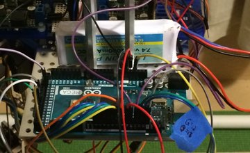
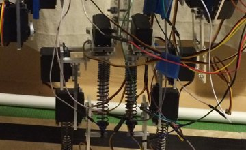
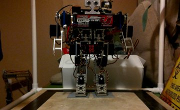
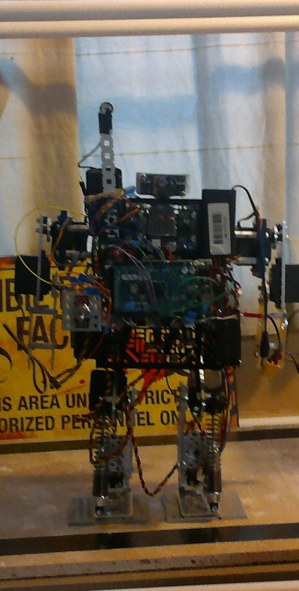

Code & Apps
python + RPython code, pipelines, and analysis — organized and pinned on GitHub.
GitHub ↗Interactive R / Shiny apps — explore the data yourself, no setup required.
Open in new tab ↗MORA — Mobile Robotic Arm
A Bluetooth-controlled, voice-controlled mobile robotic arm built on Arduino. Phase I winner, World's Largest Arduino Maker Challenge 2016.




Gauge — a biped walking robot
A two-legged walking robot built on an Arduino Mega, with servo-actuated legs, spring-loaded joints for shock absorption, and an ultrasonic sensor for obstacle detection.
Alexa Magic Mirror
A smart mirror with an integrated, voice-controlled Alexa skill — runner-up, Alexa Skill Building 101, Seattle, WA (2016).
Alexa Skills — "Professor Shark" & "Water Facts"
Two custom Alexa skills built as follow-on projects from Alexa Skill Building 101 — "Professor Shark" shares facts about sharks, and "Water Facts" covers the unique chemical properties of water.